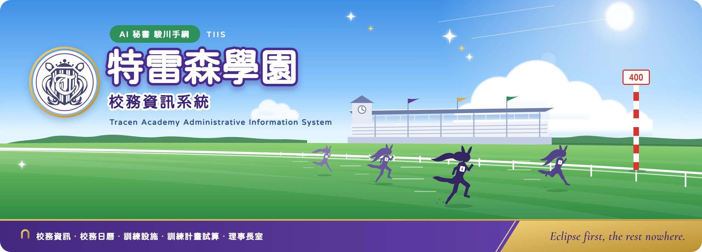
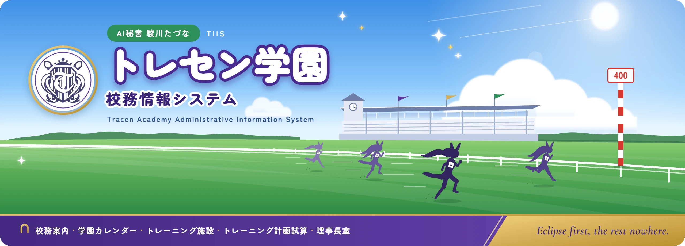
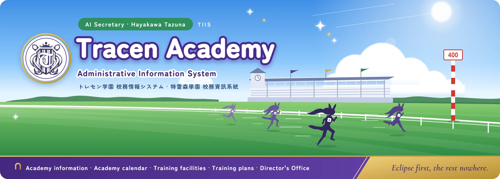

README 橫幅提案
五款原創橫幅，主題取自賽馬與《賽馬娘》的學園生活。畫面裡沒有官方角色圖；02 依使用者決定放了特雷森校徽，其他四款沒有官方標誌。每款都放在 GitHub 的淺色與深色背景上，寬度和 README 相同。原始檔在 src/，用 python docs/brand/banners/render.py 重新輸出 2560×800 的 WebP。
01 出馬表RACE CARD
仿日本賽馬報紙的出馬表：系統功能就是出賽馬，依枠番八色由右往左排，「印」欄用 ◎○▲△ 標本命，騎手欄寫的是各功能用的技術。賽名「トレセン校務ステークス」，芝 2400m 左回り（學園在府中），1 着獎金是「快適な学園生活」。資訊量最大，最能說明專案內容。
 LightDark
LightDark02 青空ターフBLUE SKY TURF · 三語版
動畫主視覺風格：夏日藍天、積雲、看台、主直線的草地與內欄，右邊是紅白相間的「ハロン棒」（剩 400m）。跑道上四位馬娘衝刺，身上有號碼布，越遠顏色越淡。左邊是圓形徽章裡的特雷森校徽，底部是紫色功能列與金色校訓帶。三個語言各一張：繁中用粉圓體（Huninn），日文、英文用 Zen Maru Gothic。

繁體中文 · Light
日本語 · Light
English · Dark校徽取自 assets/brand/tracen-crest.svg；找不到這個檔案時輸出會改用蹄鐵標誌。
03 ウイニングライブWINNING LIVE
比賽後的勝利演唱會：聚光燈、蹄鐵形的燈泡拱門、彩帶，觀眾的螢光棒是枠番八色。左邊的 SET LIST 是功能清單，右邊 STARRING 駿川たづな、BACK BAND 是技術。深色版面在 GitHub 深色模式下最融合。
 LightDark
LightDark04 藤と和紙WISTERIA & WASHI
和風現代：和紙纖維底紋上垂下一整排紫藤，右邊是明朝體直排「トレセン学園」與金色蹄鐵小印，英文用古典襯線字。和網站現有的江戸紫、藤色、金色一致，最安靜、最有質感。
 LightDark
LightDark05 着順掲示板RESULT BOARD
賽馬場的著順揭示板：點陣 LED 字、紅色「確定」燈。1 着是駿川たづな，2 到 5 着是各功能，著差用「1/2・クビ・ハナ」，馬番旁的色塊沿用出馬表的枠色。下方跑馬燈是「本日の校務はすべて確定しました」。最有梗，和 01 可以當成一組。
 LightDark
LightDark放進 README
GitHub 會照原圖比例縮到內容寬度；圖片本身有圓角與透明邊，淺色、深色模式都不用另做版本。
<p align="center"> <img src="docs/brand/banners/banner.zh-TW.webp" alt="特雷森學園 校務資訊系統 · AI 秘書 駿川手綱" width="100%"> </p> <!-- 日文、英文 README 改用 banner.ja.webp、banner.en.webp -->